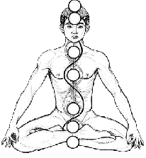
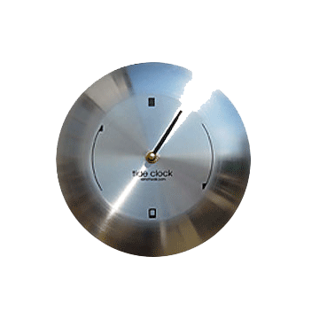
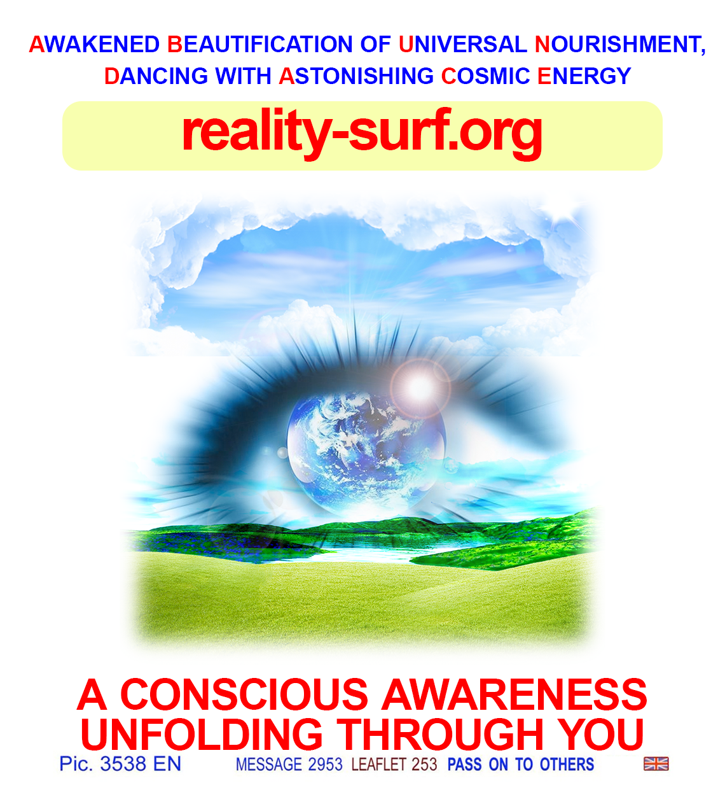

WARNING LADIES!
I’M POSTING TODAY!!!


I literally cannot hold this in anymore and if this comes out messy or full of typos I genuinely do NOT care because I am shaking and crying and laughing at the same time and nothing I type will even come close to explaining how I feel right now but I have been waiting my whole life to make this post and it finally happened so here we go.
Something insane happened to me, and I know some of you will think I’m trolling, but I swear ON EVERYTHING I LOVE, THIS IS REAL, and I’ve been waiting for this for way too long, and I literally cannot shut up about it anymore.
So basically… I shifted. YES, like actual reality shifting.
And before anyone says “this is mental illness” or “touch grass” please just let a girl finish. I know how this sounds. I used to read posts like this and roll my eyes, too. It took me FIVE YEARS. I tried everything, and I mean EVERYTHING. I learned all manifestation techniques. I journaled like CRAZY like I would literally sit there analysing my own thoughts like:ok why didn’t it work today -> clearly a limiting belief -> locate belief -> -> rewrite belief -> test again on the evening -> again the next day
My own brain turned into a lab experiment.
being an astrology + psychology + sociology baddie is actually dangerous because the moment something doesn’t work you immediately turn yourself into a case study. like: “interesting… subject displays resistance linked to subconscious fear of losing control combined with main character delusion and mild god complex…” like SHUT UP???
I used to think that if I just believed in reality shifting enough and wanted it badly enough, my desire alone would get me to my Desired Reality. But the thing is, shifting goes against everything we’ve been taught about how the universe works. Society doesn’t want you to realize how powerful you actually are.So, in this reality we’re taught that being logical is a flex. It’s NOT, it’s limiting us. To shift, we have to get whimsical, and spiritual. The less logical we are, the fewer questions we ask, and the less we try to understand this on a scientific level, the more successful we’ll be. So, how did I overcome my mind? My own limiting beliefs? Every night I would visualize my “other life” before falling asleep. Not just my private life in this selfish-individualised way, but a whole new way of living for everyone. A world filled with abundance, and I believe abundance is not accumulation, but alignment and it’s something we tune into, not chase.
Awakened Beautification of Universal Nourishment,
Dancing with Astonishing Cosmic Energy

A world filled with joy and so much delusion that it became real.
Every time I closed my eyes, I imagined golden light flowing through my body, from head to toes. And I imagined nothing fancy about my “other life”. Just me existing there. Walking around. Touching things. Hearing people talk. Feeling like I belonged there. And honestly, sometimes it felt silly, but at least it made falling asleep less depressing. And then one night it just… happened. I aligned! Everything aligned! I finally ruled my world. But I didn’t realize that immediately. I went to Joe & the Juice with my bf. We were listening to Bladee when we arrived there. I experienced a moment of intense déjà vu. I even spoke out loud to my bf "I think I just became aware of a parallel timeline."
When we got back in the car, the album resumed, but this time Bladee’s voice was different. There was a slight-but-noticeable vocal fry in his voice. His voice sounded different in the timeline I came from, but it was VERY noticeable to me because we were JUST listening to this album minutes before. And suddenly I started noticing more… everything operating in synchronicity.
Can’t even explain it properly because there was no dramatic portal moment. Like, I know it sounds like “it’s in your mind, girl,” but I just realized everything was different, but not in a dream way. Just normal. Like waking up after moving to a new house except my brain was like wait… something is very wrong here in the best possible way.
And I lived there in my Desired Reality. For twelve years.
TWELVE.
And the funniest thing is, the thing that actually got me there was literally just deciding I was done with doubt. Like, I read this one post years ago where someone said something that rewired my brain, and I swear that line lived in my head the whole time. They said something like: I decided whether shifting was real or not, I was going to make it real for myself, even if that made me the first person on this planet to ever do it. And I remember reading that and thinking “oh my god wait… you can actually do that.”
And something about that made my brain snap into place. Because for years I had that annoying little voice in the back of my head like “this is fake… everyone online is lying… you’re just playing make believe.” “i can’t do it what people will think???” like “reality is not structured that way that’s impossible” “there’s too much dialectics and shit” And I have anxiety SO obviously my brain LOVES that narrative. But one day I was just so tired and miserable, and I remember thinking, okay, fine, even if this is fake, I’m still going to pretend it’s real because pretending at least feels better than sitting here doing nothing.For twelve whole years, I had a whole life there. And I know some of you think I’m full of shit, but I swear to god I do not care if anyone believes me because if you know, you know, and if you don’t, then honestly just keep scrolling.
And this is terrible news for my opps because my life genuinely UPGRADED!!!!!!! I'm vibrating on a higher frequency, I'm getting whatever I want, and I'm seen, celebrated, and loved by a lot of people.
And before anyone asks, yes, I came back by choice, and yes, the main reason was my mom and my bf, because yeah like everyone was there but just not in the right places which started feeling wrong. but TRUST ME, part of me wanted to stay because the life I had there was INSANE. I’m talking BILLIONAIRE life. But like… not only money-wise. because ‘’Some people are so poor, all they have is money” (Bob Marley) and it wasn’t like that at all… I’m talking STUPIDDDD levels of abundance. The type of life where money vibes decisions move around you like water, and things just WORK. Opportunities just appear. People open doors. You wake up, and the day just unfolds as someone scripted it in your favour. I lived like that for twelve years, and it felt completely normal after a while, which is the craziest part. It felt like I was the CEO of the universe.
Friends. Routines. I had a whole identity there. I woke up every day in a life that would sound insane if I described it in detail. Money wasn’t even the crazy part, honestly. Because finally money didn’t matter. The crazy part was the feeling. Like the world itself was lighter. People took risks more easily. Everyone believed their lives were supposed to be interesting. There was this baseline confidence in the air that things would somehow work out. And after a while, I stopped thinking of it as “another reality.” It just became home. Like everything felt easy, you know, sometimes you see those utopian worlds filled with joy and love and understanding and tomfoolery and all that shit, rainbows and butterflies all those things operating in synchronicity. The best possible timeline.
And now, I’m back here in my Original Reality, again sitting at Joe & the Juice, typing this on my phone, waiting for my stupid 18€ strawberry coconut foam matcha latte, and everything feels weirdly flat, but also hilarious. Like I’m watching people around me take everything so seriously. This guy in front of me is wearing his five-finger Vibram shoes and noise-cancelling headphones like he’s about to run a spiritual marathon. Laptop covered in stickers about mindfulness and systems thinking. And I’m just sitting here thinking… you guys have NO idea how unnecessary all of this is. I just want to grab them and be like GUYS relax. None of us know what we’re doing anyway.
My head kind of hurts. It’s like everything in this reality is vibrating slightly too fast and it honestly feels like being awake during surgery.Like technically conscious, but everything is too bright, and everyone is moving with this weird professional calm, while your brain is just lying there on the table.. And GOD forbid I open my phone these days, the internet makes it even worse, it makes my brain constantly flipping between incompatible realities in a matter of seconds: the apocalypse and someone’s skincare routine. War footage. Then “get ready with me while I heal my inner child.” Then the Epstein files. Then a girl telling you this 14€ lip oil changed her life. One second, the world is ending, and the next second, someone is exfoliating their nose, and somehow your brain processes both while you’re drinking an overpriced beverage like that’s a normal sequence of events.
Everyone online claims they want self-awareness but that’s such a lie. All this mindfulness and looking for the truth within ourselves is such a psyop. If we actually saw ourselves clearly for five minutes in this life, we would immediately log out. Nobody actually wants the full HD version of reality. You think you do until the lighting turns on and suddenly you can see the pores of the situation. You can see everything so clearly, like suddenly you’re aware of your bitten nails and that maybe this person sitting in front of you can see your chipped tooth. I swear to god we really don’t want to see ourselves like we’d see ourselves on a 4k camera.
People say they want the truth, but what they really want is good lighting and a story that makes their decisions look intentional. Because imagine if every human being woke up tomorrow with perfect clarity. If you’d lose the illusion, if you’d lose the folly, you’d just STOP. Everyone would STOP. Nobody would flirt. Nobody would start companies. Nobody would propose marriage. Nobody would launch a podcast about optimizing their morning routine. Civilization would quietly power down like a laptop with 2% battery. And don’t get me started about the intellectual guys online… one meme and immediately six browser tabs like “ah yes this reminds me of Lacan or Deleuze and the rhizomatic structure of the neoliberal—” SHUT UP. It’s just bullshit with bigger words. Half the people liking your post have no idea what a rhizome is and they’re just nodding along because nobody wants to be the one guy in the replies going sorry WTF are you talking about. They just don't want to look stupid.
So yeah, a little bit of delusion is probably doing a lot of work behind the scenes, and honestly, thank GOD for that.
Anyway, I have to get on the bus now.A window reflects a giant neon M&M advertisement directly into some guy’s glasses, so for a second, he looks possessed by corporate candy. A dog in a purse is barking at a homeless guy wearing AirPods. Someone’s watching TikTok with the volume fully on. Luxury storefronts. Notification sounds. A girl laughing too loudly for no reason. Someone scrolling with the stare of a person who has seen too many timelines. The bus doors open and close with that weird sound like the bus itself is tired of this economy. And honestly, after 12 years in my DR, none of this even bothers me anymore. If I see someone flying down the street tomorrow, I will probably just smile and move out of the way. So yeah. That’s my story.
Five years of trying. Twelve years somewhere else. And now I’m back here typing this with shaky hands and a melting matcha because I decided I should return to the timeline where paper straws disintegrate after thirty seconds, and I am the one still feeling guilty while world leaders will bomb countries meanwhile.
If you’re reading this and you’re losing hope, I just want to say something real quick before my phone dies.
Stop asking strangers on the internet for permission. Stop reading theories to prove yourself. Think outside of the box. Think in ways that people around you might call you crazy for. whenever you start thinking "oh well but maybe shifting isn’t real because of XYZ" STOP YOURSELF.
Allow your mind to wander, Allow yourself to tap back into the whimsical side of you. Believe in magic. shifting is REAL. It is real whether you believe it or not.
The only thing that ever matters is the moment you stop asking whether it is real and start acting like it is. And eventually reality will catch up.
Just KEEP Assuming!..Ignore Reality
Anyway!!! my phone battery is at 2% and honestly I feel like I just woke up from the longest dream of my life. If you’re reading this right now I’m rooting for you. I don’t know you but I know what it feels like to think your life is permanently stuck. Maybe tonight you shift. Who knows. Good luck